Node information
Test timing information
Up ramp statistics
Runtime session statistics
Down ramp statistics
Overall statistics
CPU usage graphs
Processes usage graphs
Memory usage graph
Disk usage graphs
Network usage graphs
| Test start | 2014-11-19 10:34:6 |
| Up ramp start | 2014-11-19 10:34:13 |
| Runtime session start | 2014-11-19 10:34:28 |
| Down ramp start | 2014-11-19 10:35:58 |
| Test end | 2014-11-19 10:37:1 |
| Up ramp length | 15 seconds 1 millisecond (requested 15000 ms) |
| Runtime session length | 1 minute 30 seconds 0 millisecond (requested 90000 ms) |
| Down ramp length | 15 seconds 0 millisecond (requested 15000 ms) |
| Total test length | 2 minutes 54 seconds 839 milliseconds |
| State name | % of total | Count | Errors | Minimum Time | Maximum Time | Average Time |
|---|---|---|---|---|---|---|
StoriesOfTheDay | 30 % | 4324 | 0 | 4 ms | 4420 ms | 377 ms
|
Register | 1 % | 159 | 0 | 1 ms | 1715 ms | 68 ms
|
RegisterUser | 0 % | 111 | 0 | 20 ms | 1053 ms | 53 ms
|
Browse | 4 % | 640 | 0 | 1 ms | 3041 ms | 76 ms
|
BrowseCategories | 1 % | 200 | 0 | 2 ms | 3535 ms | 22 ms
|
BrowseStoriesInCategory | 1 % | 184 | 0 | 14 ms | 1055 ms | 23 ms
|
OlderStories | 1 % | 255 | 0 | 3 ms | 1451 ms | 15 ms
|
ViewStory | 20 % | 2808 | 0 | 2 ms | 3147 ms | 118 ms
|
PostComment | 4 % | 627 | 0 | 1 ms | 3038 ms | 20 ms
|
StoreComment | 2 % | 397 | 0 | 21 ms | 1068 ms | 50 ms
|
ViewComment | 8 % | 1135 | 0 | 3 ms | 1908 ms | 21 ms
|
ModerateComment | 0 % | 72 | 0 | 3 ms | 1433 ms | 25 ms
|
StoreModerateLog | 0 % | 35 | 0 | 24 ms | 452 ms | 75 ms
|
SubmitStory | 2 % | 351 | 0 | 2 ms | 3135 ms | 83 ms
|
StoreStory | 1 % | 224 | 0 | 18 ms | 1112 ms | 43 ms
|
Search | 3 % | 502 | 0 | 1 ms | 3274 ms | 72 ms
|
SearchInStories | 1 % | 263 | 0 | 3 ms | 3018 ms | 23 ms
|
SearchInComments | 0 % | 125 | 0 | 5 ms | 1115 ms | 27 ms
|
SearchInUsers | 0 % | 56 | 0 | 4 ms | 1707 ms | 57 ms
|
Author (login) | 0 % | 77 | 0 | 1 ms | 3014 ms | 89 ms
|
Author (task) | 0 % | 52 | 0 | 2 ms | 26 ms | 3 ms
|
ReviewStories | 0 % | 31 | 0 | 9 ms | 69 ms | 12 ms
|
AcceptStory | 0 % | 11 | 0 | 100 ms | 186 ms | 79 ms
|
RejectStory | 0 % | 4 | 0 | 51 ms | 51 ms | 12 ms
|
Back probability | 3 % | 523 | 0 | 0 ms | 0 ms | 0 ms
|
End of Session | 6 % | 844 | 0 | 0 ms | 0 ms | 0 ms
|
Total | 100 % | 14010 | 0 | - | - | 157 ms
|
Average throughput | 933 req/s
| |||||
Completed sessions | 615
| |||||
Total time | 4794 seconds
| |||||
Average session time | 7 seconds
| |||||
| State name | % of total | Count | Errors | Minimum Time | Maximum Time | Average Time |
|---|---|---|---|---|---|---|
StoriesOfTheDay | 17 % | 7444 | 0 | 4 ms | 1041 ms | 31 ms
|
Register | 1 % | 469 | 0 | 1 ms | 1002 ms | 19 ms
|
RegisterUser | 1 % | 467 | 1 | 10 ms | 1469 ms | 113 ms
|
Browse | 5 % | 2224 | 0 | 0 ms | 1040 ms | 20 ms
|
BrowseCategories | 2 % | 864 | 0 | 2 ms | 1014 ms | 30 ms
|
BrowseStoriesInCategory | 3 % | 1382 | 0 | 4 ms | 1049 ms | 59 ms
|
OlderStories | 3 % | 1498 | 0 | 2 ms | 1031 ms | 31 ms
|
ViewStory | 16 % | 6936 | 0 | 3 ms | 1841 ms | 44 ms
|
PostComment | 5 % | 2519 | 0 | 1 ms | 1044 ms | 24 ms
|
StoreComment | 5 % | 2510 | 0 | 20 ms | 1949 ms | 165 ms
|
ViewComment | 10 % | 4365 | 0 | 3 ms | 3460 ms | 58 ms
|
ModerateComment | 0 % | 194 | 0 | 2 ms | 1010 ms | 29 ms
|
StoreModerateLog | 0 % | 129 | 0 | 25 ms | 1522 ms | 198 ms
|
SubmitStory | 2 % | 1182 | 0 | 2 ms | 1007 ms | 22 ms
|
StoreStory | 2 % | 992 | 0 | 16 ms | 1482 ms | 128 ms
|
Search | 3 % | 1637 | 0 | 1 ms | 1026 ms | 25 ms
|
SearchInStories | 2 % | 1230 | 0 | 2 ms | 1280 ms | 38 ms
|
SearchInComments | 1 % | 744 | 0 | 4 ms | 1993 ms | 74 ms
|
SearchInUsers | 0 % | 232 | 0 | 4 ms | 1024 ms | 52 ms
|
Author (login) | 0 % | 197 | 0 | 1 ms | 937 ms | 23 ms
|
Author (task) | 0 % | 205 | 0 | 2 ms | 1008 ms | 25 ms
|
ReviewStories | 0 % | 203 | 0 | 6 ms | 1007 ms | 49 ms
|
AcceptStory | 0 % | 128 | 14 | 3 ms | 791 ms | 170 ms
|
RejectStory | 0 % | 81 | 7 | 4 ms | 1072 ms | 130 ms
|
Back probability | 4 % | 1911 | 0 | 0 ms | 0 ms | 0 ms
|
End of Session | 6 % | 2807 | 0 | 0 ms | 0 ms | 0 ms
|
Total | 100 % | 42550 | 22 | - | - | 45 ms
|
Average throughput | 473 req/s
| |||||
Completed sessions | 2801
| |||||
Total time | 119567 seconds
| |||||
Average session time | 42 seconds
| |||||
| State name | % of total | Count | Errors | Minimum Time | Maximum Time | Average Time |
|---|---|---|---|---|---|---|
StoriesOfTheDay | 17 % | 1201 | 0 | 4 ms | 667 ms | 30 ms
|
Register | 1 % | 83 | 0 | 1 ms | 668 ms | 12 ms
|
RegisterUser | 1 % | 83 | 0 | 27 ms | 688 ms | 122 ms
|
Browse | 5 % | 359 | 0 | 1 ms | 653 ms | 32 ms
|
BrowseCategories | 2 % | 141 | 0 | 2 ms | 642 ms | 32 ms
|
BrowseStoriesInCategory | 3 % | 239 | 0 | 4 ms | 682 ms | 71 ms
|
OlderStories | 3 % | 252 | 0 | 3 ms | 661 ms | 30 ms
|
ViewStory | 16 % | 1141 | 0 | 3 ms | 774 ms | 42 ms
|
PostComment | 5 % | 403 | 0 | 1 ms | 647 ms | 19 ms
|
StoreComment | 5 % | 404 | 0 | 22 ms | 998 ms | 156 ms
|
ViewComment | 10 % | 720 | 0 | 3 ms | 797 ms | 50 ms
|
ModerateComment | 0 % | 30 | 0 | 4 ms | 25 ms | 7 ms
|
StoreModerateLog | 0 % | 19 | 0 | 64 ms | 393 ms | 117 ms
|
SubmitStory | 3 % | 232 | 0 | 2 ms | 637 ms | 16 ms
|
StoreStory | 2 % | 184 | 0 | 19 ms | 728 ms | 116 ms
|
Search | 3 % | 231 | 0 | 1 ms | 652 ms | 21 ms
|
SearchInStories | 2 % | 207 | 0 | 3 ms | 675 ms | 35 ms
|
SearchInComments | 1 % | 110 | 0 | 4 ms | 742 ms | 99 ms
|
SearchInUsers | 0 % | 47 | 0 | 5 ms | 681 ms | 62 ms
|
Author (login) | 0 % | 30 | 0 | 1 ms | 196 ms | 10 ms
|
Author (task) | 0 % | 22 | 0 | 3 ms | 85 ms | 13 ms
|
ReviewStories | 0 % | 28 | 0 | 9 ms | 663 ms | 43 ms
|
AcceptStory | 0 % | 19 | 1 | 4 ms | 445 ms | 139 ms
|
RejectStory | 0 % | 10 | 1 | 5 ms | 130 ms | 52 ms
|
Back probability | 4 % | 347 | 0 | 0 ms | 0 ms | 0 ms
|
End of Session | 6 % | 449 | 0 | 0 ms | 0 ms | 0 ms
|
Total | 100 % | 6991 | 2 | - | - | 43 ms
|
Average throughput | 466 req/s
| |||||
Completed sessions | 473
| |||||
Total time | 31307 seconds
| |||||
Average session time | 66 seconds
| |||||
| State name | % of total | Count | Errors | Minimum Time | Maximum Time | Average Time |
|---|---|---|---|---|---|---|
StoriesOfTheDay | 20 % | 12977 | 0 | 4 ms | 4420 ms | 147 ms
|
Register | 1 % | 713 | 0 | 1 ms | 1715 ms | 29 ms
|
RegisterUser | 1 % | 661 | 1 | 10 ms | 1469 ms | 109 ms
|
Browse | 5 % | 3227 | 0 | 0 ms | 3041 ms | 35 ms
|
BrowseCategories | 1 % | 1206 | 0 | 2 ms | 3535 ms | 33 ms
|
BrowseStoriesInCategory | 2 % | 1811 | 0 | 4 ms | 1055 ms | 58 ms
|
OlderStories | 3 % | 2008 | 0 | 2 ms | 1451 ms | 31 ms
|
ViewStory | 17 % | 10896 | 0 | 2 ms | 3147 ms | 65 ms
|
PostComment | 5 % | 3559 | 0 | 1 ms | 3038 ms | 25 ms
|
StoreComment | 5 % | 3317 | 0 | 20 ms | 1949 ms | 151 ms
|
ViewComment | 9 % | 6229 | 0 | 3 ms | 3460 ms | 52 ms
|
ModerateComment | 0 % | 296 | 0 | 2 ms | 1433 ms | 26 ms
|
StoreModerateLog | 0 % | 183 | 0 | 24 ms | 1522 ms | 166 ms
|
SubmitStory | 2 % | 1772 | 0 | 2 ms | 3135 ms | 37 ms
|
StoreStory | 2 % | 1405 | 0 | 16 ms | 1482 ms | 116 ms
|
Search | 3 % | 2377 | 0 | 1 ms | 3274 ms | 36 ms
|
SearchInStories | 2 % | 1703 | 0 | 2 ms | 3018 ms | 36 ms
|
SearchInComments | 1 % | 981 | 0 | 4 ms | 1993 ms | 74 ms
|
SearchInUsers | 0 % | 337 | 0 | 4 ms | 1707 ms | 57 ms
|
Author (login) | 0 % | 304 | 0 | 1 ms | 3014 ms | 38 ms
|
Author (task) | 0 % | 279 | 0 | 2 ms | 1008 ms | 20 ms
|
ReviewStories | 0 % | 262 | 0 | 6 ms | 1013 ms | 48 ms
|
AcceptStory | 0 % | 159 | 15 | 3 ms | 791 ms | 158 ms
|
RejectStory | 0 % | 95 | 8 | 4 ms | 1072 ms | 116 ms
|
Back probability | 4 % | 2788 | 0 | 0 ms | 0 ms | 0 ms
|
End of Session | 6 % | 4114 | 0 | 0 ms | 0 ms | 0 ms
|
Total | 100 % | 63659 | 24 | - | - | 71 ms
|
Average throughput | 530 req/s
| |||||
Completed sessions | 4113
| |||||
Total time | 171253 seconds
| |||||
Average session time | 41 seconds
| |||||
test#####0
test#####0.2
test#####0.5
test#####1
test#####2
test#####3
Command is: /usr/bin/rsh -x localhost /bin/bash -c 'LANG=en_GB.UTF-8 /usr/local/bin/sar -n DEV -n SOCK -rubcw 1 125 -f /home/ubuntu/RUBBoS/bench/2014-11-19@10:34:6/web_server.bin > /home/ubuntu/RUBBoS/bench/2014-11-19@10:34:6/web_server'
Command is: /usr/bin/rsh -x localhost /bin/bash -c 'LANG=en_GB.UTF-8 /usr/local/bin/sar -n DEV -n SOCK -rubcw 1 125 -f /home/ubuntu/RUBBoS/bench/2014-11-19@10:34:6/db_server.bin > /home/ubuntu/RUBBoS/bench/2014-11-19@10:34:6/db_server'
Command is: /usr/bin/rsh -x localhost /bin/bash -c 'LANG=en_GB.UTF-8 /usr/local/bin/sar -n DEV -n SOCK -rubcw 1 125 -f /home/ubuntu/RUBBoS/bench/2014-11-19@10:34:6/client0.bin > /home/ubuntu/RUBBoS/bench/2014-11-19@10:34:6/client0'
hantest
/home/ubuntu/RUBBoS/bench/2014-11-19@10:34:6/
gif
1
Generating data files ... '/home/ubuntu/RUBBoS/bench/2014-11-19@10:34:6/db_server' done.
Generating data files ... '/home/ubuntu/RUBBoS/bench/2014-11-19@10:34:6/web_server' done.
Generating data files ... '/home/ubuntu/RUBBoS/bench/2014-11-19@10:34:6/client0' done.
Generating servers CPU idle time graph
Generating servers CPU busy time graph
Generating servers CPU user/system time graph
Generating servers Processes/second graph
Generating servers Context switches/second graph
Generating servers Disk total transfers graph
Generating servers disk read/write requests graph
Generating servers disk blocks read/write requests graph
Generating servers Memory usage graph
Generating servers Memory & cache usage graph
Generating servers network received/transmitted packets graph
Generating servers network received/transmitted bytes graph
Generating servers Sockets usage graph
Generating clients CPU idle time graph
Generating clients CPU busy time graph
Generating clients CPU user/system time graph
Generating clients Processes/second graph
Generating clients Context switches/second graph
Generating clients Disk total transfers graph
Generating clients disk read/write requests graph
Generating clients disk blocks read/write requests graph
Generating clients Memory usage graph
Generating clients Memory & cache usage graph
Generating clients network received/transmitted packets graph
Generating clients network received/transmitted bytes graph
Generating clients Sockets usage graph
Erasing temporary files ...
|
| |
| 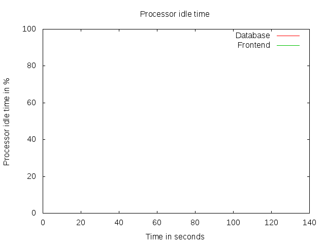 |
|
| 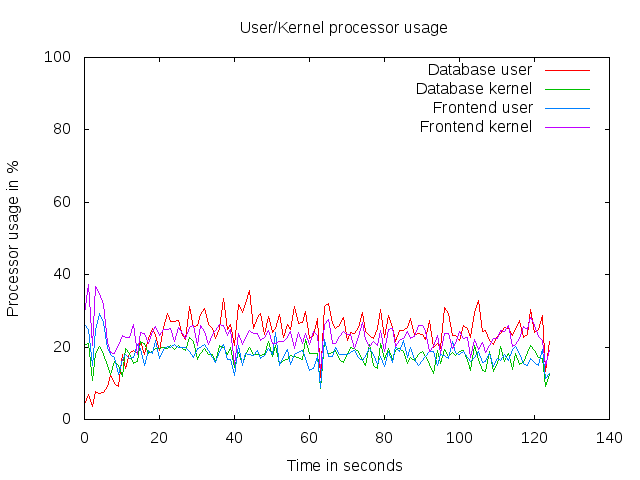 |
|
| 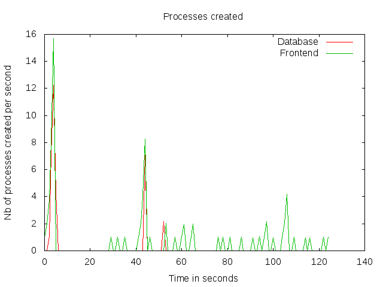 | 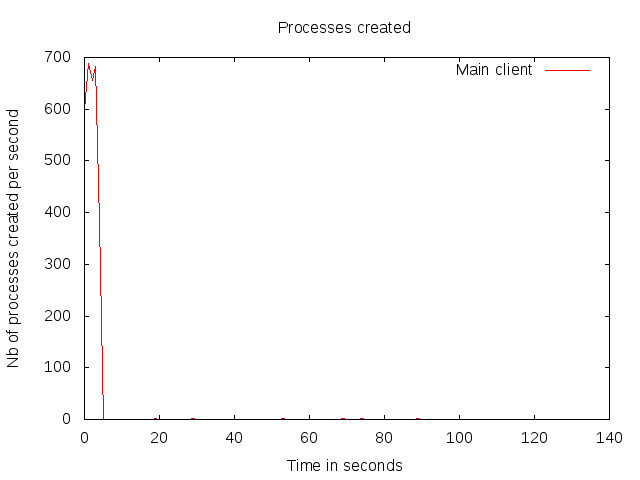 |
| 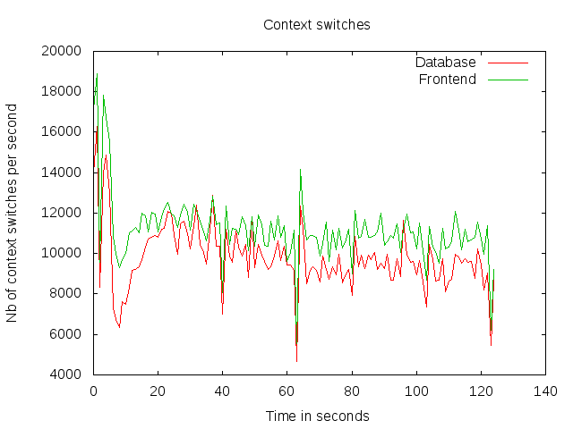 | 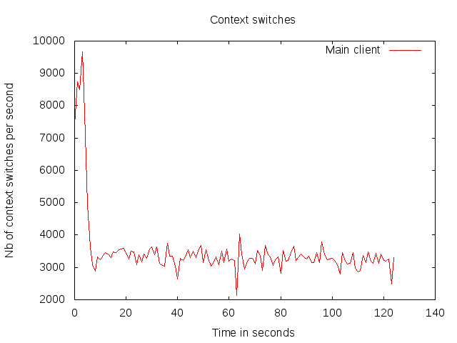 |
| 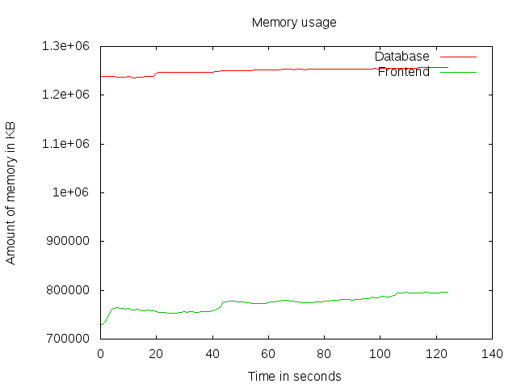 | 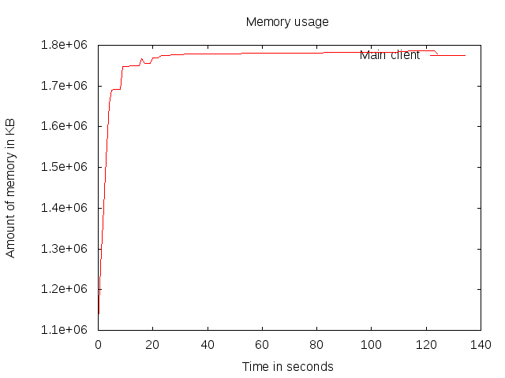 |
| 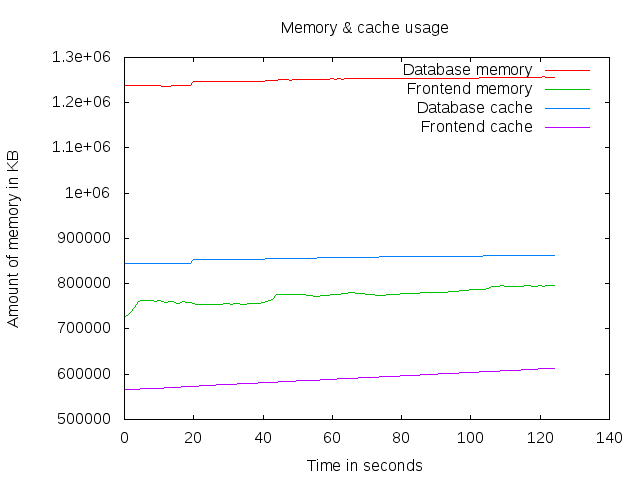 | 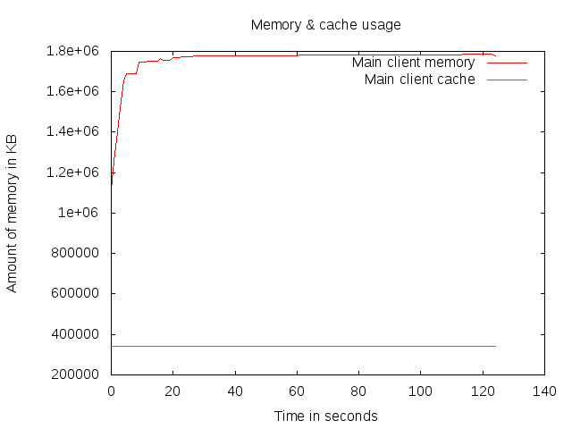 |
| 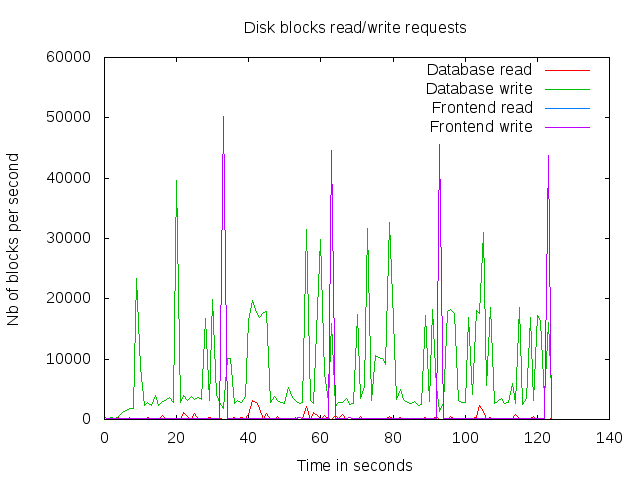 | 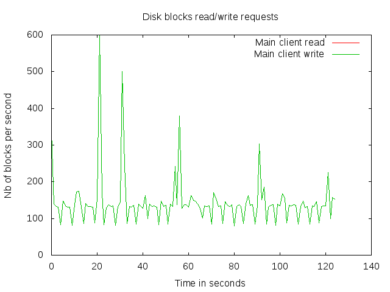 |
| 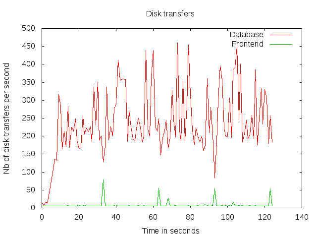 | 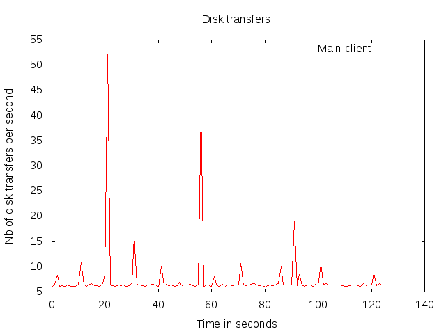 |
| 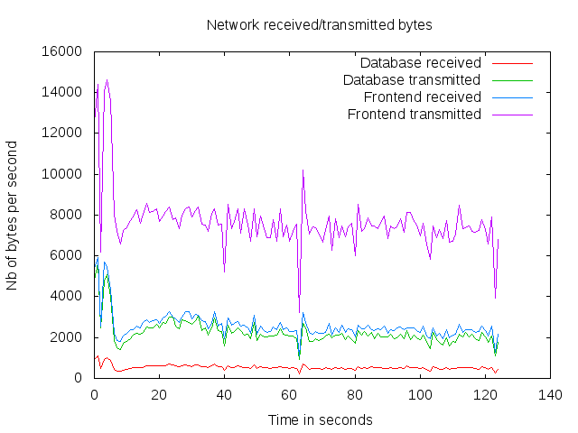 | 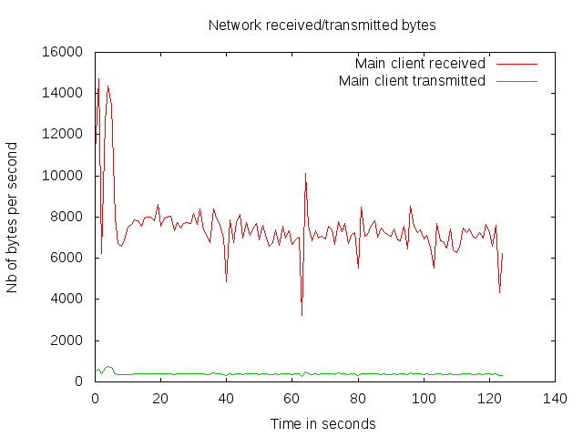 |
| 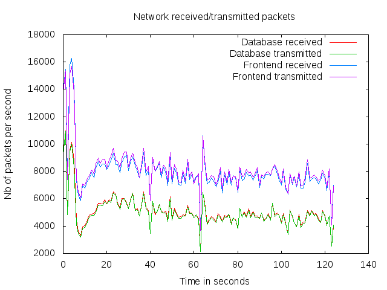 | 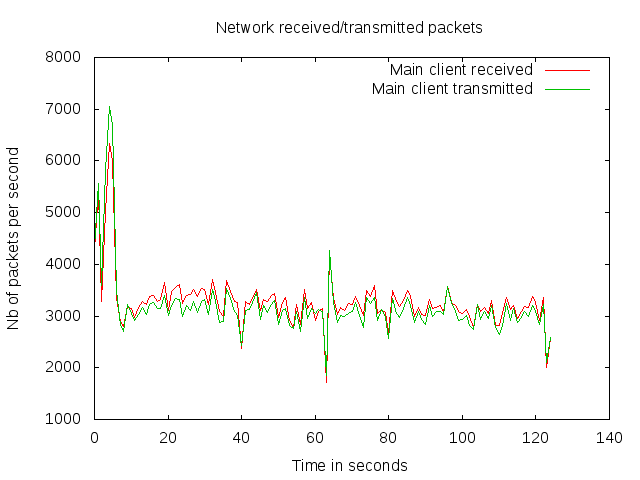 |
| 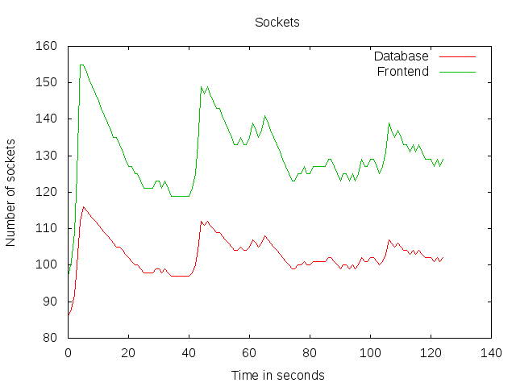 | 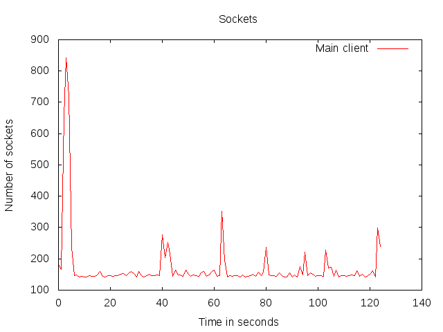 |
Computing global stats for 1 scripts in /home/ubuntu/RUBBoS/bench/2014-11-19@10:34:6/ ... Done.